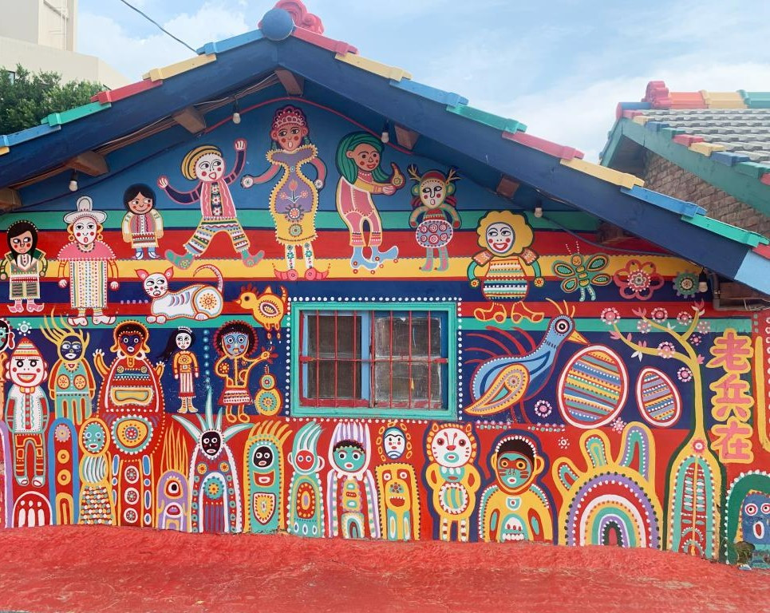

一、彩虹眷村簡介
彩虹眷村位於臺中市南屯區，以色彩鮮明的牆面與充滿想像力的圖案受到遊客注意。走進巷弄，可以看到牆壁、地面與建築表面呈現出活潑的視覺效果。
這裡的彩繪作品讓原本平凡的巷弄具有獨特風格，也成為認識臺灣眷村文化與地方藝術的入口。參觀時可以留意圖案、線條、色彩，以及作品與周圍建築的關係。
到訪時，建議放慢腳步欣賞不同角落的畫作，並遵守現場規定、尊重周邊居民。開放時間與參觀規定可能變動，出發前請查看官方最新公告。
景點地址：台中市南屯區春安路56巷。
閱讀重點：彩繪藝術、眷村文化與城市景觀。
二、景點特色與參觀順序
值得留意的三個特色
- 彩繪藝術： 色彩鮮豔的圖案與線條讓巷弄呈現活潑、童趣的視覺風格。
- 眷村文化： 眷村是臺灣地方生活與歷史的一部分，參觀時可搭配現場解說認識相關背景。
- 特色景觀： 多樣的牆面圖案適合仔細觀察與拍照，拍攝時請留意其他遊客及現場規範。
建議參觀順序
以下是本報導規劃的參觀建議，並非官方指定路線。
- 進入彩虹眷村後，先觀察入口附近的彩繪作品。
- 沿著巷弄散步，欣賞不同牆面的繪畫。
- 找到具有代表性的彩繪作品拍照。
- 閱讀現場介紹，了解彩虹眷村的歷史與文化。
三、景點比較表
:| 景點名稱 | 主要特色 | 建議觀察重點 |
|---|---|---|
| 彩虹眷村 | 彩繪藝術與眷村文化 | 彩色牆面與繪畫作品 |
| 審計新村 | 文創與老建築 | 文創商店與街區景觀 |
| 草悟道 | 城市綠地與公共藝術 | 綠地與街道景觀 |
四、彩虹眷村照片

圖片來源： 交通部觀光署 。
五、影音報導
透過下方影片認識彩虹眷村， 再比較影片畫面與本文介紹的景點特色。

影片為外部作者發布的景點介紹， 現場狀況請以最新官方資訊為準。
六、地圖與交通
彩虹眷村位於臺中市南屯區春安路 56 巷。 參觀前請先確認最新的開放資訊與交通方式。
景點地址
臺中市南屯區春安路 56 巷Google Maps 地圖
七、資料來源
本報導依下列資料整理， 參觀順序與觀察建議由作者規劃。
資料整理日期：2026 年 10 月 7 日。